Searching¶
Search query language¶
Syntax¶
The search syntax is very close to the Lucene syntax. By default all message fields are included in the search if you don’t specify a message field to search in.
Messages that include the term ssh:
ssh
Messages that include the term ssh or login:
ssh login
Messages that include the exact phrase ssh login:
"ssh login"
Messages where the field type includes ssh:
type:ssh
Messages where the field type includes ssh or login:
type:(ssh login)
Messages where the field type includes the exact phrase ssh login:
type:"ssh login"
Messages that do not have the field type:
_missing_:type
Messages that have the field type:
_exists_:type
By default all terms or phrases are OR connected so all messages that have at least one hit are returned. You can use Boolean operators and groups for control over this:
"ssh login" AND source:example.org
("ssh login" AND (source:example.org OR source:another.example.org)) OR _exists_:always_find_me
You can also use the NOT operator:
"ssh login" AND NOT source:example.org
NOT example.org
**Note that AND, OR, and NOT are case sensitive and must be typed in all upper-case.
Wildcards: Use ? to replace a single character or * to replace zero or more characters:
source:*.org
source:exam?le.org
source:exam?le.*
Note that leading wildcards are disabled to avoid excessive memory consumption! You can enable them in
your graylog-server.conf: allow_leading_wildcard_searches = true
Also note that message, full_message, and source are the only fields that can be searched via wildcard by default.
Fuzziness: You can search for similar but not equal terms:
ssh logni~
source:exmaple.org~
This is using the Damerau–Levenshtein distance with a default distance of 2. You can change the distance like this:
source:exmaple.org~1
You can also use the fuzzyness operator to do a proximity search where the terms in a phrase can have different/fuzzy distances from each other and don’t have to be in the defined order:
"foo bar"~5
Numeric fields support range queries. Ranges in square brackets are inclusive, curly brackets are exclusive and can even be combined:
http_response_code:[500 TO 504]
http_response_code:{400 TO 404}
bytes:{0 TO 64]
http_response_code:[0 TO 64}
You can also do searches with one side unbounded:
http_response_code:>400
http_response_code:<400
http_response_code:>=400
http_response_code:<=400
It is also possible to combine unbounded range operators:
http_response_code:(>=400 AND <500)
Escaping¶
The following characters must be escaped with a backslash:
&& || : \ / + - ! ( ) { } [ ] ^ " ~ * ?
Example:
resource:\/posts\/45326
Time frame selector¶
The time frame selector defines in what time range to search in. It offers three different ways of selecting a time range and is vital for search speed: If you know you are only interested in messages of the last hour, only search in that time frame. This will make Graylog search in relevant indices only and greatly reduce system load and required resources. You can read more about this here: The Graylog index model explained
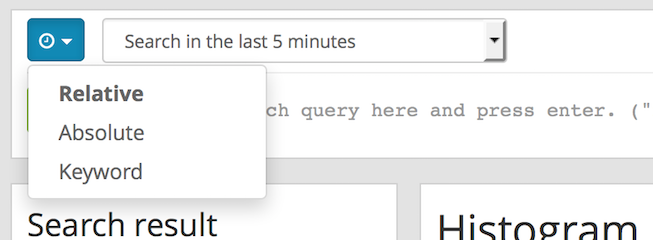Relative time frame selector¶
The relative time frame selector lets you look for messages from the selected option to the time you hit the search button. The selector offers a wide set of relative time frames that fit most of your search needs.
Absolute time frame selector¶
When you know exactly the boundaries of your search, you want to use the absolute time frame selector. Simply introduce the dates and times for the search manually or click in the input field to open up a calendar where you can choose the day with your mouse.
Keyword time frame selector¶
Graylog offers a keyword time frame selector that allows you to specify the time frame for the search in natural language like last hour or last 90 days. The web interface shows a preview of the two actual timestamps that will be used for the search.
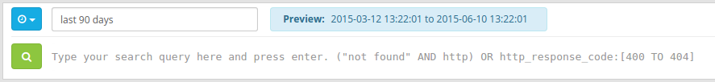Here are a few examples for possible values.
- “last month” searches between one month ago and now
- “4 hours ago” searches between four hours ago and now
- “1st of april to 2 days ago” searches between 1st of April and 2 days ago
- “yesterday midnight +0200 to today midnight +0200” searches between yesterday midnight and today midnight in timezone +0200 - will be 22:00 in UTC
The time frame is parsed using the natty natural language parser. Please consult its documentation for details.
Saved searches¶
Sometimes you may want to search a specific search configuration to be used later. Graylog provides a saved search functionality to accomplish exactly that.
Once you submitted your search, selected the fields you want to show from the search sidebar, and chosen a resolution for the histogram, click on the Save search criteria button on the sidebar.
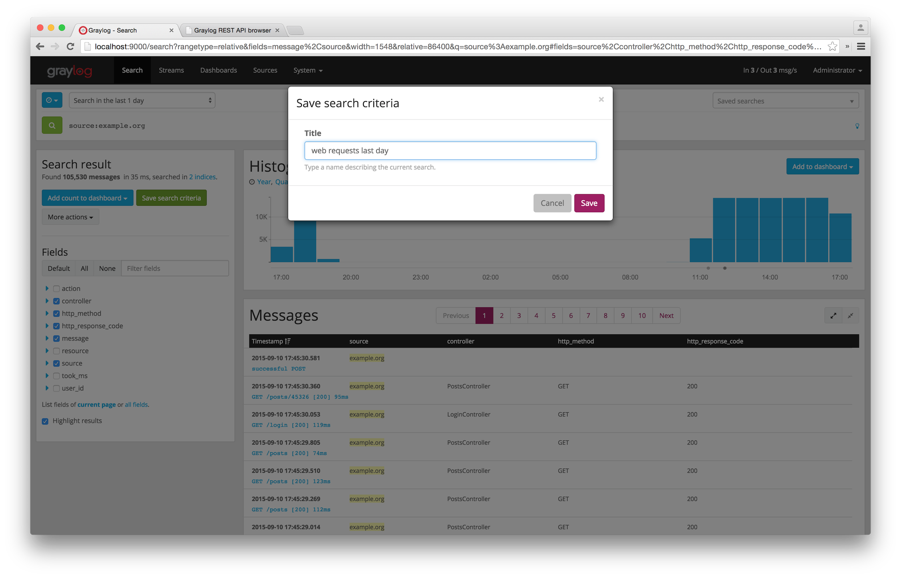Give a name to the current search and click on save. When you want to use the saved search later on, you only need to select it from the saved search selector.
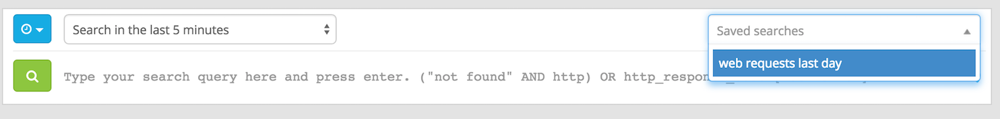Of course, you can always update the selected fields or name of your saved search. To do so, select the saved search from the saved search selector, update the field selection or histogram resolution, and click on Saved search -> Update search criteria. It is also possible to delete the saved search by selecting Saved search -> Delete saved search.
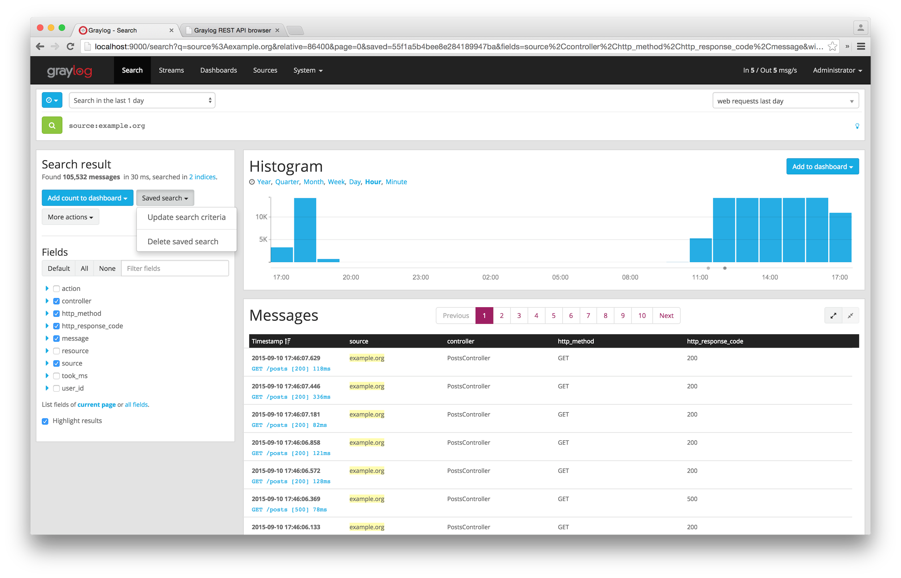Analysis¶
Graylog provides several tools to analyze your search results. It is possible to save these analysis into dashboards, so you can check them over time in a more convenient way. To analyze a field from your search results, expand the field in the search sidebar and click on the button of the analysis you want to perform.
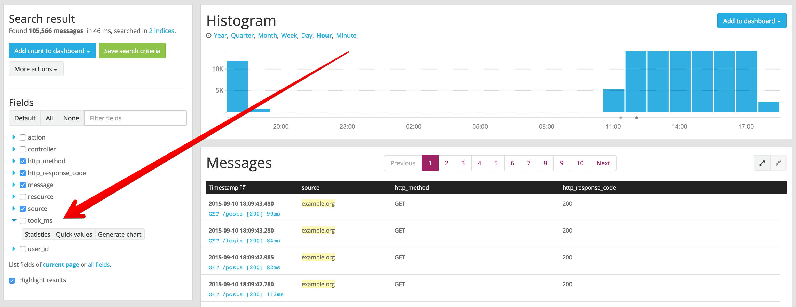Field statistics¶
Compute different statistics on your fields, to help you better summarize and understand the data in them.
The statistical information consist of: total, mean, minimum, maximum, standard deviation, variance, sum, and cardinality. On non-numeric fields, you can only see the total amount of messages containing that field, and the cardinality of the field, i.e. the number of unique values it has.
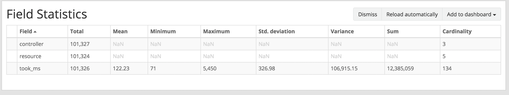Quick values¶
Quick values helps you to find out the distribution of values for a field. Alongside a graphic representation of the common values contained in a field, Graylog will display a table with all different values, allowing you to see the number of times they appear. You can include any value in your search query by clicking on the magnifying glass icon located in the value row.
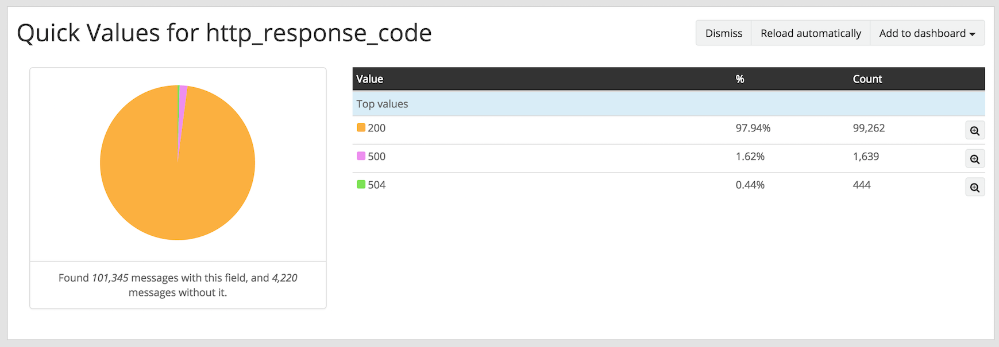Field graphs¶
You can create field graphs for any numeric field, by clicking on the Generate chart button in the search sidebar. Using the options in the Customize menu on top of the field graph, you can change the statistical function used in the graph, the kind of graph to use to represent the values, the graph interpolation, as well as the time resolution.
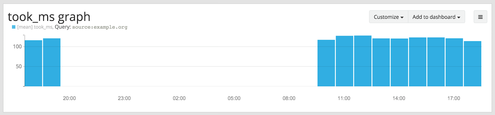Once you have customized some field graphs, you can also combine them by dragging them from the hamburger icon on the top corner of the graph, and dropping them into another field graph. You can see the location of the hamburger icon and the end result in the the following screenshots:
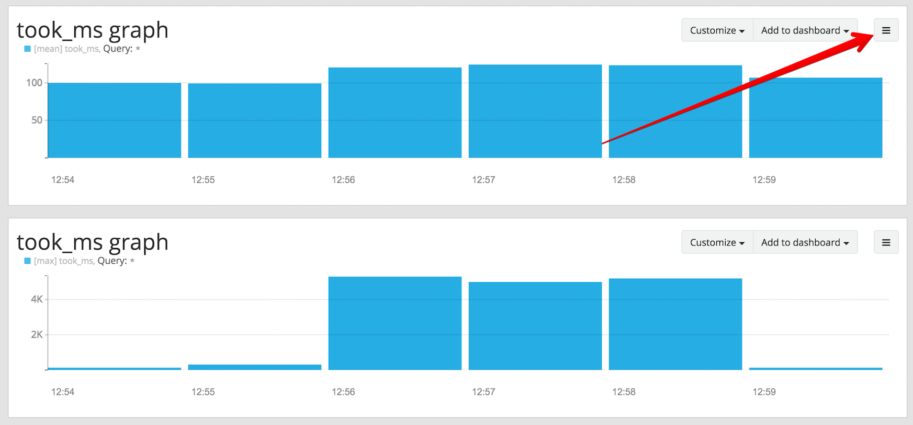 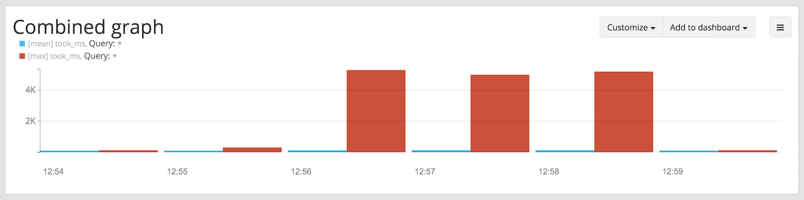Field graphs appear every time you perform a search, allowing you to compare data, or combine graphs coming from different streams.
Export results as CSV¶
It is also possible to export the results of your search as a CSV document. To do so, select all fields you want to export in the search sidebar, click on the More actions button, and select Export as CSV.
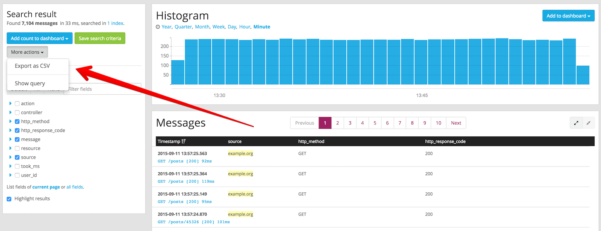Hint: Some Graylog inputs keep the original message in the the full_message field. If you need to export the original message, you can do so by clicking on the List all fields link at the bottom of the sidebar, and then selecting the full_message field.
Search result highlighting¶
Graylog supports search result highlighting since v0.20.2:
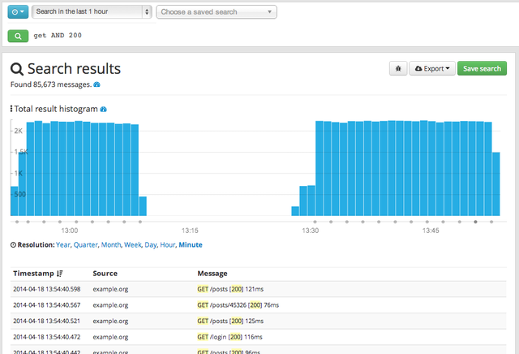Enabling/Disabling search result highlighting¶
Using search result highlighting will result in slightly higher resource consumption of searches. You can enable and disable
it using a configuration parameter in the graylog.conf of your graylog-server nodes:
allow_highlighting = true